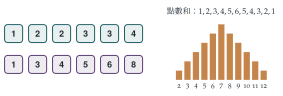

STEP I 1993，第 1 題
繼續之前，請先閱讀題目（原題為英文）。題目載於 STEP Support Programme 的題目資料庫： step.maths.org/questions/93-s1-q1
引子
兩顆六面骰子，各面標上正整數，除了平常的標法之外，還有沒有別的標法，可以令由 \(2\) 到 \(12\) 的每個點數和出現的次數，都與普通骰子完全相同？1978 年，Martin Gardner 在《科學人》（Scientific American）雜誌上宣布，這樣的標法恰好只有一種：一顆骰子標上 \(1, 2, 2, 3, 3, 4\)，另一顆標上 \(1, 3, 4, 5, 6, 8\)。這對骰子由 George Sicherman 上校發現，現在市面上有售，稱為Sicherman 骰子。用它們來玩一局大富翁（Monopoly），與用普通骰子玩根本無從分辨。
本題是一道熱身題：從點數和的列表，推斷兩顆骰子各面標了甚麼數字。要有系統地解決這個問題，以至證明 Sicherman 骰子是唯一的一對奇異骰子，方法都是把每顆骰子化為一個多項式（polynomial）。
動筆之前
假設第一顆骰子有 \(p_i\) 個面顯示 \(i\)，第二顆有 \(q_j\) 個面顯示 \(j\)，那麼擲出點數和 \(t\) 共有多少種方法？
方法的數目是 \(\sum_i p_iq_{t-i}\)：先選定第一顆骰子的點數 \(i\)，第二顆就必須顯示 \(t - i\)。就題目中的第一對骰子而言，點數和 \(6\) 可以來自 \(1 + 5\)（有 \(1 \times 1\) 種方法）、\(2 + 4\)（\(2 \times 1\) 種）、\(3 + 3\)（\(2 \times 2\) 種），此外再無其他可能，因為第一顆骰子沒有 \(4\) 或 \(5\)，而第二顆沒有 \(0\)。所以共有 \(1 + 2 + 4 = 7\) 種方法。■
逐步解題
階段 1 兩端的情況
把兩顆骰子稱為 \(A\) 和 \(B\)，並以 \(a_i\)、\(b_i\) 分別表示兩顆骰子上顯示 \(i\) 的面數。
點數和不可能是 \(2\)，也不可能是 \(12\)。這對 \(1\) 和 \(6\) 的分佈有甚麼啟示？擲出 \(3\) 卻確實有兩種方法。哪一顆骰子上有 \(1\)？
擲不出點數和 \(2\)，即 \(a_1b_1 = 0\)：最多只有一顆骰子上有 \(1\)。點數和 \(3\) 只可能是 \(1 + 2\) 或 \(2 + 1\)，而且有兩種方法，所以其中一顆骰子確實有 \(1\)；把它稱為 \(A\)，於是 \(b_1 = 0\)。那麼 \[\text{點數和 } 3: \quad a_1b_2 = 2, \qquad\text{所以 } (a_1, b_2) = (2, 1) \text{ 或 } (1, 2).\] 同理，擲不出點數和 \(12\)，即 \(a_6b_6 = 0\)。
階段 2 逐步向上推
寫出點數和為 \(4\) 的方程，記住 \(b_1 = 0\)。在兩種情況下，這個方程分別說明了甚麼？
點數和 \(4\) 是 \(1 + 3\) 或 \(2 + 2\)（由於 \(b_1 = 0\)，\(3 + 1\) 不可能出現），所以 \(a_1b_3 + a_2b_2 = 1\)。
情況 (a)，\(a_1 = 2\)，\(b_2 = 1\)：\(2b_3 + a_2 = 1\)，所以 \(b_3 = 0\) 及 \(a_2 = 1\)。
情況 (b)，\(a_1 = 1\)，\(b_2 = 2\)：\(b_3 + 2a_2 = 1\)，所以 \(a_2 = 0\) 及 \(b_3 = 1\)。
點數和 \(5\)：\(a_1b_4 + a_2b_3 + a_3b_2 = 1\)。
情況 (a)：\(2b_4 + 0 + a_3 = 1\)，所以 \(b_4 = 0\)，\(a_3 = 1\)。至此 \(A\) 有 \(1, 1, 2, 3\)，\(B\) 有 \(2\)；\(B\) 其餘五個面都是 \(5\) 或 \(6\)。
情況 (b)：\(b_4 + 0 + 2a_3 = 1\)，所以 \(a_3 = 0\)，\(b_4 = 1\)。至此 \(A\) 有 \(1\)，\(B\) 有 \(2, 2, 3, 4\)；\(A\) 其餘五個面取自 \(4, 5, 6\)，\(B\) 其餘兩個面取自 \(5, 6\)。
階段 3 情況 (a) 不成立
在情況 (a) 中，寫出點數和為 \(7\) 的方程，並利用 \(b_5 + b_6 = 5\)。
點數和 \(7\)：\(a_1b_6 + a_2b_5 + a_3b_4 + a_4b_3 + a_5b_2 = 2b_6 + b_5 + 0 + 0 + a_5 = 3\)。代入 \(b_6 = 5 - b_5\)，得 \(10 - b_5 + a_5 = 3\)，所以 \(b_5 = 7 + a_5 \geq 7\)。但 \(B\) 只有六個面。情況 (a) 不可能成立。
階段 4 情況 (b) 成立
在情況 (b) 中，利用點數和 \(6\) 和 \(11\)，以及 \(a_6b_6 = 0\) 這個事實。
點數和 \(6\)：\(a_1b_5 + a_4b_2 = b_5 + 2a_4 = 4\)（其餘各個乘積都含有 \(a_2 = a_3 = 0\) 或 \(b_1 = 0\)）。由於 \(b_5 \leq 2\)，而且 \(b_5 = 4 - 2a_4\) 是偶數，所以要麼 \(b_5 = 0, a_4 = 2\)，要麼 \(b_5 = 2, a_4 = 1\)。
若 \(b_5 = 0\)，則 \(B\) 是 \(2, 2, 3, 4, 6, 6\)，於是 \(a_6 = 0\)，而 \(A\) 是 \(1, 4, 4, 5, 5, 5\)。但這樣點數和 \(7\) 就有 \(a_1b_6 + a_4b_3 + a_5b_2 = 2 + 2 + 6 = 10\) 種方法，而不是 \(3\) 種。
若 \(b_5 = 2\)，則 \(B\) 是 \(2, 2, 3, 4, 5, 5\)，其中 \(b_6 = 0\)，而 \(A\) 是 \(1, 4\) 再加上四個取自 \(5\) 和 \(6\) 的面。點數和 \(11\)：\(a_6b_5 = 2a_6 = 6\)，所以 \(a_6 = 3\) 及 \(a_5 = 1\)。
唯一的可能是 \[A:\ 1, 4, 5, 6, 6, 6, \qquad B:\ 2, 2, 3, 4, 5, 5.\] 最後，我們必須驗證這對骰子確實給出整個列表，因為我們只用了其中一部分點數和。把乘積展開（或利用下文的多項式），即可確認每一項都吻合。■
回顧
從兩端入手。最小和最大的點數和只牽涉一兩個乘積，所以提供的資訊最有力。
分情況討論，逐一排除。每個點數和都把可能性收窄一些，直到只剩下一種情況。
檢查充分性（sufficiency）。推論說明了骰子必須是甚麼樣子；最後的驗證則說明這對骰子確實可行。
背後的數學
把骰子看成多項式
把每顆骰子寫成一個多項式：每個顯示 \(i\) 的面對應一項 \(x^i\)。普通骰子是 \(x + x^2 + x^3 + x^4 + x^5 + x^6\)，而題目中的兩顆骰子是 \[A(x) = x + x^4 + x^5 + 3x^6, \qquad B(x) = 2x^2 + x^3 + x^4 + 2x^5.\] 相乘時，每一對面貢獻 \(x^ix^j = x^{i+j}\)，所以 \(A(x)B(x)\) 中 \(x^t\) 的係數（coefficient），就是擲出點數和 \(t\) 的方法數目。這又是 第 9.4 節 中母函數（generating function）的想法：點數和的列表其實就是乘積 \(A(x)B(x)\)，而我們逐個情況的推論，正是把它因式分解（factorise）的一種方法。
Sicherman 骰子
兩顆普通骰子的乘積是 \((x + x^2 + \cdots + x^6)^2\)。任何一對點數和分佈相同的骰子，其多項式 \(P(x)\)、\(Q(x)\) 必須滿足 \(P(x)Q(x) = (x + \cdots + x^6)^2\)。現在作因式分解： \[x + x^2 + \cdots + x^6 = x(1 + x)(1 + x + x^2)(1 - x + x^2),\] 而這些因式不能再進一步分解（成為整數係數的多項式）。所以 \(P\) 和 \(Q\) 都必須由因式 \(x\)、\(1 + x\)、\(1 + x + x^2\)、\(1 - x + x^2\) 組成，而每個因式合共出現兩次。以下三個條件把選擇收窄：
每顆骰子有 \(6\) 個面，所以 \(P(1) = Q(1) = 6\)；各因式在 \(x = 1\) 時的值分別是 \(1\)、\(2\)、\(3\)、\(1\)，所以每顆骰子各得一個 \(1 + x\) 和一個 \(1 + x + x^2\)；
沒有任何面顯示 \(0\)，所以 \(P(0) = Q(0) = 0\)：每顆骰子各得一個因式 \(x\)；
餘下唯一的自由，是兩個 \(1 - x + x^2\) 如何分配。每顆各得一個，就是普通骰子。兩個都歸同一顆骰子，則得 \[\begin{aligned} x(1 + x)(1 + x + x^2) &= x + 2x^2 + 2x^3 + x^4, \\ x(1 + x)(1 + x + x^2)(1 - x + x^2)^2 &= x + x^3 + x^4 + x^5 + x^6 + x^8. \end{aligned}\]
這就是 Sicherman 骰子，\(1, 2, 2, 3, 3, 4\) 和 \(1, 3, 4, 5, 6, 8\)（圖 9.6.1），而以上論證亦證明了它們是唯一的另一種可能。關鍵在於：多項式與整數一樣，可以唯一地分解為不可約（irreducible）因式的乘積——數論與組合數學（combinatorics）在此相遇。

在概率論中，同一個想法以概率母函數（probability generating function）的形式出現：取值 \(0, 1, 2, \ldots\) 的隨機變量（random variable）\(X\) 有 \(\mathrm{G}(t) = \mathrm{E}(t^X) = \sum \mathrm{P}(X = k)t^k\)，而對於獨立（independent）的 \(X\) 和 \(Y\)，\(\mathrm{E}(t^{X+Y}) = \mathrm{E}(t^X)\mathrm{E}(t^Y)\)。獨立隨機變量之和，對應於母函數之積。STEP III 2003 Q14（見練習）就是用這個方法找出 Sicherman 骰子，而 第 9.13 節 則用一個相關的論證，說明無論怎樣在兩顆骰子上做手腳，都不能令所有點數和出現的機會均等。
思維技巧
當物件以數值相加的方式組合時，把每個物件表示成 \(x\) 的多項式。組合變成相乘，而有關組合的問題就變成有關因式分解的問題。
在這裏，一個關於骰子的問題化成了多項式的唯一分解（unique factorisation）。在大學裏，這類編碼隨處可見：在組合數學中，在概率論中，也在代數中——在代數裏，多項式本身就是研究對象，它們構成一個環（ring），其算術與整數的算術相似。
延伸練習
四面體骰子。試做 STEP III 2003，第 14 題，該題就四面骰子提出 Sicherman 的問題。（提示：\(x + x^2 + x^3 + x^4 = x(1 + x)(1 + x^2)\)。）
驗證列表。展開 \((x + x^4 + x^5 + 3x^6)(2x^2 + x^3 + x^4 + 2x^5)\)，並與題目中的列表對照。
三顆骰子。是否存在三顆六面骰子，各面標上正整數，不全是標準骰子，而其點數和的分佈與三顆標準骰子相同？（提示：\((x + \cdots + x^6)^3\) 的因式現在包括三個 \(1 - x + x^2\)。）
一枚硬幣與一個八面體。一顆標上 \(1, \ldots, 8\) 的八面骰子，和一顆標上 \(1, 2\) 的兩面「骰子」（即一枚硬幣）：能否用另一種方式重新標號，而點數和的分佈保持不變？
延伸閱讀
Martin Gardner, Penrose Tiles to Trapdoor Ciphers（Mathematical Association of America）。收錄了關於 Sicherman 骰子的那篇專欄文章。
Joseph Gallian & David Rusin, “Cyclotomic polynomials and nonstandard dice”, Discrete Mathematics 27 (1979)。一般理論，適用於任意面數的骰子。
Herbert Wilf, generatingfunctionology（可於網上免費閱覽），第 1 章。